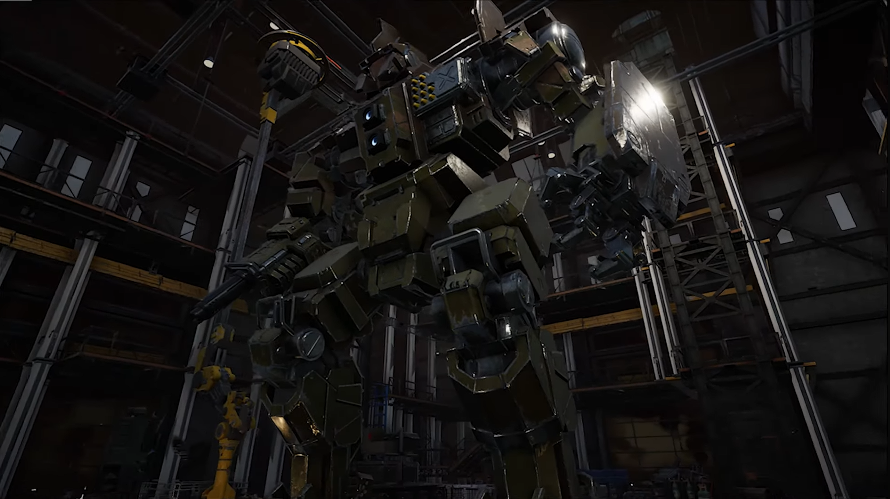
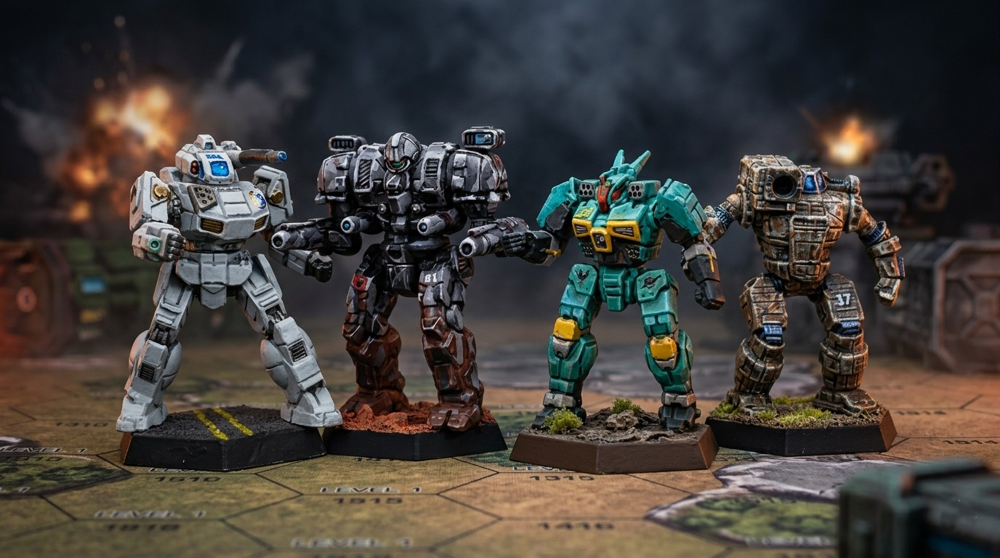
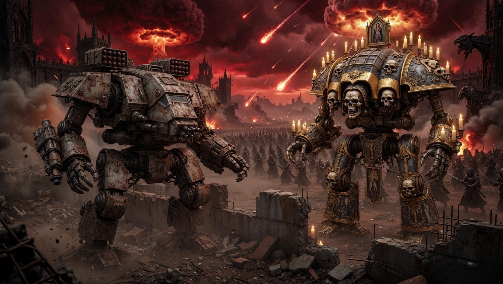
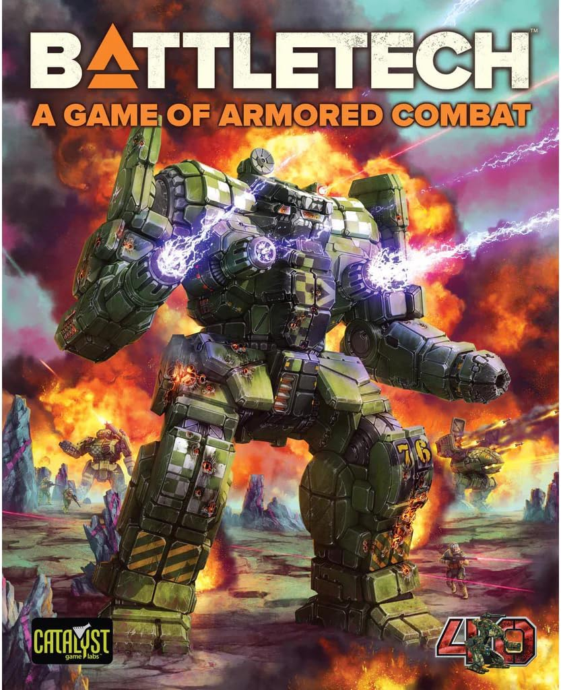

Lore · 14 min read
The Succession Wars: How Humanity Burned Its Future
Three centuries of civil war that turned a golden age into lostech and grudges. Words on a dark field — no generated cityscapes.

BattleTech Down Under
A lance-first builder for actual games, a weapon-aware solo opponent, and the guides I wish I'd had in 1997.
The product
Force planner
Built for the table, not a wiki. Filter by faction and era, track BV and tonnage in real time, preview loadouts, print the roster sheet.

Your force
Heat, armour and ammo for the 'Mechs you are piloting. Keeps a full lance straight so you are not rubbing out pencil marks between turns.
Their force
A weapon-aware opponent. It reads the variant you are facing, picks the range band that 'Mech wants, and gives movement and fire orders every turn.
Alpha Strike
Five to ten missions, a company of twelve, damage that carries, salvage that pays. Pilots can die. Still in alpha — shown honestly.
Hobby
Faction presets or your own scheme. Matching Citadel and Vallejo names so you stop guessing at the wet palette.
Start here
What to buy, how the rules work, and what to expect from your first game.

Cost, gameplay, community — from someone who has played both.

A complete, playable collection for under $100, in the right order.
Mech guides

75 tons · Inner Sphere
The most recognisable heavy in the game, and the one most people play wrong. Every variant ranked, the heat maths behind the 3R, and how to kill one.
Lore · 14 min read
Three centuries of civil war that turned a golden age into lostech and grudges. Words on a dark field — no generated cityscapes.
Hobby
This site is run by Dave — host of BattleTech Down Under. Playing and painting since 1997. If something's wrong or missing, say so.
Watch on YouTubeGear
The best entry point for most new players. Eight 'Mechs, complete rules, maps.
Amazon ~$60Two 'Mechs and simplified rules. Good if you want to try before committing.
Amazon ~$25One coat over white primer. Tabletop result in minutes per model.
View on AmazonAs an Amazon Associate I earn from qualifying purchases. Full disclosure.